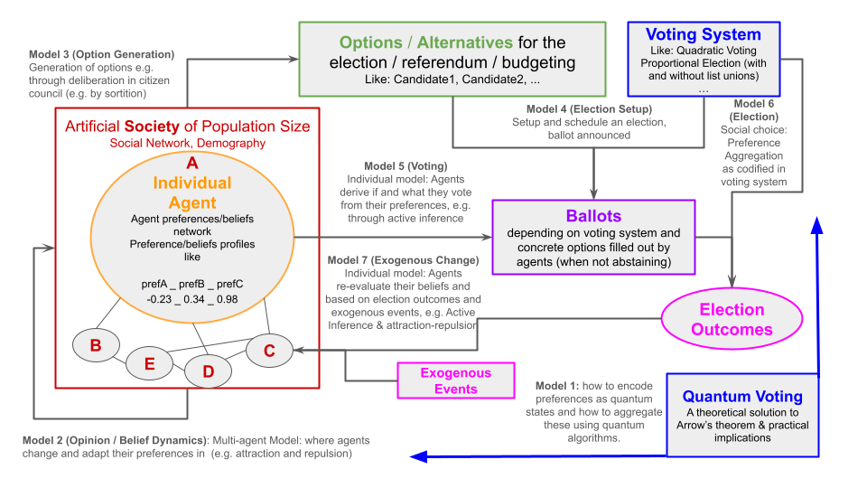
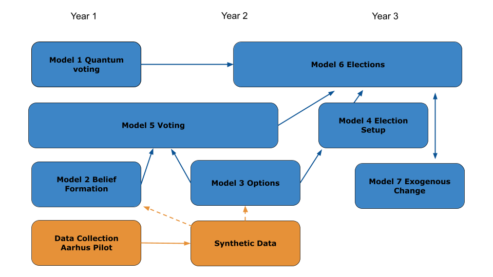

We build a stack of models that simulate the process of preference formation and an election in the electorate of the population of Aarhus. Once for the municipal election and once for the national election.
As specifiec in the proposal and the Specification Document D04.1, we have a stack of 6 models that are connected to each other as shown in the Figure 1. Here we specify this chain of models further with the goal to implent the first prototype. To that end, we also give an overview of the data sources used for initialization and validation.


Figure 1: Modeling plan from the proposal (left) and the Specification Document D04.1 (right).
We focus on the following models in the first prototype in the following form:
Model 2: Preference Formation (how agents form their preferences)
Model 3: Candidates and Parties (set up exogenously from data)
Model 4: Election Setup (set up as the orignal voting system in Aarhus and then alternative voting systems)
Model 5: Voting
Model 6: Election (aggregation of votes into results)
4 Data Sources
These are the data sources we use for initialization and validation of the models. Additionally, some data sources are also used as input data in model simulation.
Aarhus Census: Census data for the population of Aarhus
Aarhus News Corpus: A corpus of local news articles from the last year in Aarhus tagged for the local topics in the survey.
Aarhus Survey: Survey responses about beliefs, preference on national and local issues, and voting behavior in the last election.
Aarhus Candidates: Candidate profiles for all participating candidates in the last municipal election in Aarhus.
Aarhus Election Results: Results from the last municipal election in Aarhus. Results from the last national election in Aarhus.
5 Model Overview
Figure 2 gives the full outline the models and their connections to each other and to the data sources. The full model flow is shown in the bottom part (Greenish), the data sources in the top part (blue), and the algorithms for initialization (purple) and validation (magenta) in the middle part. The arrows show the flow of data and information between the different components.
Nodes with the note-shape (with the dog-ear on the topright) represent raw empirical data sources. Nodes with the box-shape represent algorithms for initialization, validation, or simulation procedures, while double-lined boxes represent substantial (multistep) algorithms and single-line procedures represent mainly one function determining the validation or election outcome computation. Nodes with the cylinder-shape represent simulated data which by initialization or model procedures. The validation nodes are rounded boxes. This represents that validation can be function determining the quality of the match between emprical and simulated data but may also be in part qualitatively done in the first place.
Besides the five emprical data sources, the Voting System is another source of empirical input. We implement the original Danish proportional voting system with open list composed by parties where each voter has one vote to either give to one candidate from a party list or just to one party list without specifying a candidate. Later the voting system shall be exchanged with other for counterfactual scenario simulations. The voting system has implications. The voting system determines the election setup (Model 4) based on the lists of candidates and, therefore, has implications on how the ballot looks and what voters have to decide about when they want to fill it out (Model 5). Subsequently it determines how the election results are computed from the ballots (Model 6).
5.2 Initialization procedures
We have two initialization procedures. Both create a set of agents serving as a synthetic population representing the electorate of the city of Aarhus. Therefore, they both take the census data as input, such that they can create agents in the same magnitude and with demographic characteristics such that represent the real population. The procedures also take the survey data as input. This data is used to initialize agents also with relevant beliefs and preferences as the core dynamic agent variables and also with static internal variables of agents determining their behavior (to be explained later).
Initialization 1 is for initialization of the Agents for Preference Formation. The preference formation model will transform these preferences through individual preference updates. The goal is that the Agents for Voting have preference distributions and relations simular to the real world as captured in the survey data. The core dynamic variables model are therefore the preferences. That means the variables ALCL1, …, ALCL10. When the distributions and relations of these variables shall emerge through preference formation, the initial values of these variables should not be set based on the survey data but rather be initialized randomly around neutrality.
This implies the following guidelines for Initialization 1:
The variables ALCL1, …, ALCL10 shall be initialized as random numbers1 centered around neutrality (value equal to zero). The standard deviation of the distribution is a tuning parameter \(\sigma_\text{Pref}\). Roughly three settings are of interest:
\(\sigma_\text{Pref} = 0\) (default): All agents start with zero on all preferences and the distribution emerges through external input through news and candidates and through reinforcement.
\(\sigma_\text{Pref}\) close to zero: The initial values can serve as a small nudge.
\(\sigma_\text{Pref}\) as in the survey data: The preference formation model must than not produce variance but sort preference relations and specific distribution patterns beyond normal distributions.
The agents need some heterogeneity in relevant static internal variables determining their behavior. Candidates for such static variables are:
Three topics of interest as encoded in variable survey variable ALCL11. It could be encoded in ten binary variables marking if the topic is important for the agent.
A correlation matrix representing the mental model of the agent about the relations between the different preferences. This can be initialized based on the correlation matrix derived from different demographic and subgroups of repondents of the survey data. The mental model can then determine how like an update of preferences is when they perceive news, or the preferences of candidates and peers.
Long-term party preferences (taken, as a proxy, from the voting behavior as reported in the survey)
Variables derived from the survey data Part 3: Opinion on Politics specifying things like independence of political opinion formation or trust in others, curiousity for new opinions, propensity to proximity voting, preferences for people or parties, and other aspects. These aspects can be used to specify behavioral rules for agents in the preference formation model.
First version: ALCL1, …, ALCL10 are initialized as zero and a mental model for them as a correlation matrix taken from data and demographics. A few different correlation matrices are enough for the first version.
Initialization 2 is for initialization of the Agents for Voting. The voting model will transform these preferences and produces Agents with ballots. The goal is that the votes of the agents are similar to the real votes as captured in the survey data. The intialization procedure thus follows the main idea of a synthetic population with the same charaterstics as the real population. The simplest version would be by resampling from repsondents of the survey data. More sophisticated versions should be able to increase the diversity of agents in a realistic way.
Note: The Aarhus survey fulfills different roles in the Preference Formation and the Voting model. In the first, it is used mostly for validation of the outcome of preference formation and only a few aspects are used for agent initialization. In the second, the survey data is mainly used for intitialization while the empirical validation in the end is on the election results. That is the reason for Agents for Voting and Agents for Voting appearing two times in the simulation pipeline. This reflects that the pipeline is divided into the independent models of preference formation and the voting. At later stage, they can be combined into a single model.
5.3 Validation functions
We have three validation functions. The first one is for validating the outcome of the preference formation model. The second one is for validating the votes of agents in the voting model, and the third one is for validating the election results.
Validation 1 The goal is that the distribution of simulated preferences and their relations are similar to the survey data. Therefore, we can use distributional similarity metrics and correlation similarity metrics as validation functions.
Validation 2 is for validating the votes of agents in the voting model. The goal is that individual voting decisions based on the preferences are similar to the actual voting decisions as reported by respondents in the survey. Therefore, we can use classification metrics as validation functions.
Validation 3 is for validating the election results. The goal is that the aggregated simulated election results are similar to the real election results. Therefore, we can use distance metrics between distributions as validation functions. The difference to Validation 2 is that we are not validating the individual votes but the aggregated election results.
5.4 Simulation procedures
The Preference Formation model is a dynamic multi-timestep model where agents update their preferences based on their interaction but also with external input from news and candidates. Details are described
The Voting model is a one-shot model that takes the preferences of agents and the candidate and party profiles as input and produces a ballot (or an abstention) for each agent. In the default voting system the ballot is essentially a choice of one candidate or one party. In alternative voting systems, the ballot can be more complex.
The Election is the simple aggregation of all ballots to the typical voting outcome: Counts of votes for all parties and candidates and the vote shares of parties.
6 Preference Formation Model
Figure 3 gives an overview of the preference formation model including the necessary initialization steps. The model is a dynamic multi-timestep model where agents update their preferences based on their interaction but also with external input from news and candidates.
Code
sequenceDiagram participant Configurator participant Polis actor Agent actor AgentPeer as Agents (peers) rect rgb(237, 185, 251) Note over Configurator, AgentPeer: Initialization 1 and News Initialization Configurator->>Polis: initialize news Configurator->>Agent: initialize preferences end rect rgb(171, 252, 233) Note over Configurator, AgentPeer: Preference Formation per-timestep preference update loop each simulation step (day) Note over Polis, Agent: Broadcasting preferences Polis->>Polis: broadcast(messages) loop each agent Agent->>Agent: broadcast(message) end Note over Polis, AgentPeer: Perceive and update preferences loop each agent Agent->>Polis: perceive(messages) Agent->>AgentPeer: perceive(messages) Agent->>Agent: updatePreferences(messages) end end end
sequenceDiagram
participant Configurator
participant Polis
actor Agent
actor AgentPeer as Agents (peers)
rect rgb(237, 185, 251)
Note over Configurator, AgentPeer: Initialization 1 and News Initialization
Configurator->>Polis: initialize news
Configurator->>Agent: initialize preferences
end
rect rgb(171, 252, 233)
Note over Configurator, AgentPeer: Preference Formation per-timestep preference update
loop each simulation step (day)
Note over Polis, Agent: Broadcasting preferences
Polis->>Polis: broadcast(messages)
loop each agent
Agent->>Agent: broadcast(message)
end
Note over Polis, AgentPeer: Perceive and update preferences
loop each agent
Agent->>Polis: perceive(messages)
Agent->>AgentPeer: perceive(messages)
Agent->>Agent: updatePreferences(messages)
end
end
end
Figure 3: Preference Formation Sequence Diagram
Note: Agents (peers) stands prototypical for the other agents in the population.
6.1 Specification of the initialization
In the most basic version, the initialization of agents must include:
Dynamic variables: The preferences ALCL1, …, ALCL10 initialized as zero.
Static internal variables: A mental model for the preferences as a correlation matrix taken from data and demographics. Some initial empirical correlation matrices can be found in the Survey Results section.
The preference variables in the survey all have values in \(\{-2,-1,0,1,2\}\), where -2 and 2 represent the strongest negative and positive preferences, respectively. In the simulation model, we use continuous values in the same range \([-2, 2]\). The latter allows for more fine-grained updates.
6.2 Specification of the preference formation model functions
The simulation loops over several time steps. In each time step, agents broadcast their preferences and perceive the news and the preferences of their peers. Based on this input, they update their preferences.
6.2.1 Message format
A message is a key-value pair where the key is one of the ten preference topics ALCL1, …, ALCL10 and the value is a number in the range \([-2, 2]\).
Examples: {ALCL1: +2}, {ALCL4: -1}, {ALCL10: +0.43}, {ALCL5: -1.37}.
messages is a list of message objects.
Notes:Polis can broadcast messages (like the daily news) which maybe perceived by agents. Each agent broadcasts only one message per time step. Upon perceiving, agents may perceive messages from Polis and Peer-Agents. So, agent collects a list of messages. Then it works through them one by one via the updatePreferences function.
6.2.2 Broadcast functions
Polis: In the simplest version (where we do not have a news dataset), broadcast(messages) selects a random ALCL-domains and a random values. In the simple version, messages can just be a single message object.
Agent: The simple version of broadcast(message) is that the agent picks a random key and takes its current the writes out its current preferences. (Option: If agents also maintain three important domains as they also specify in the survey, they can select those domains more likely.)
6.2.3 Perception and update functions
In the perception and update phase, the perceive function reads the broadcasted messaged from the Polis and Peer-Agents, compiles a messages list and works through it one by one by applying updatePreferences.
Given a perceived message and the own preference profile (which is technically identical to a list of one message per each ALCL domain) updatePreferences updates the own preference of the same key or not by the procedure as specified by Batzke et al. (2025). Central for this is a mental model specifying the correlation between different preferences which the agent considers relevant. (To be derive from data next.)
Basic principles of updatePreferences:
Agents aim for a coherent preference profile.
For the sake of this formalization we can assume the preference profile of agent \(k\) being a 10 dimensional vector \(x^{(j)}\) with \(x^{(j)}_i\) representing its current preference value for ALCL\(i\).
Each agents maintains a mental model to evaluate the coherence of a preference profile. Coherence is one number. The higher the number the more coherent is the profile.
The mental model is a correlation matrix \(C^{(j)}\) with \(C^{(j)}_{ij}\) representing the correlation between ALCL\(i\) and ALCL\(j\). The matrix is symmetric and the diagonal is zero (in constrast to the standard correlation matrix). So essentially only \((n^2 - n)/2\) elements need to be stored. For ten domains this is 45 elements. The diagonal is zero because the correlation of a domain with itself is not relevant for the coherence evaluation between domains.
The coherence function for a preference profile \(x\) (omitting the agent index \(j\)) is defined as \(c^{(j)}(x) = x^TC^{(j)}x\) (with \(x^T\) being the transpose of \(x\)).
Agents change their preference profiles based on external input of a message.
Agent \(j\) executes updatePreferences(message) as follows for a message that has key ALCL\(i\) and value \(v\):
Compute coherence distance. Agent \(j\) evaluates the coherence of its current preference profile \(c^{(j)}(x^{(j)})\) and the coherence of a new preference profile \(c^{(j)}(\hat{x}^{(j)})\) where \(\hat{x}^{(j)}_\text{new}\) is identical to \(x^{(j)}\) except for ALCL\(i\) which is \(x^{(j)}_i = v\). Based on the current and the hypothetical new profile, the agent computes the coherence distance\(\Delta c^{(j)} = c^{(j)}(\hat{x}^{(j)}) - c^{(j)}(x^{(j)})\).
Stochastic decision to update. Agent \(j\) computes an update probability\(P(\Delta c^{(j)}) = \frac{1}{1 + e^{-k\Delta c^{(j)}}}\). It makes a stochastic decision to update its preference based on this probability. Note: The probabilty tends towards certainty when the distance is positive and large, it tends towards zero when the distance is negative and large. The probability is 50% when the distance is zero. In the first version, the parameter \(k\) is a model-wide tuning parameter. It can be replaced by an agent characteristic in later version. \(k\) is called the importance of coherence. For \(k = 0\) the update probability is always 50%, regardless of the coherence distance. For large \(k\), the update probability becomes almost deterministic in the way that updates happen when the preference update in the direction of the message increases coherence.
Update preference. If the agent decides to update, moves \(x^{(j)}_i\) towards \(v\) by setting it new value to \((1-\alpha)x^{(j)}_i + \alpha v\), where \(\alpha \in [0,1]\) is the update rate. For \(\alpha = 1\), the new preference is fully updated to \(v\). For lower \(\alpha\) it only moves a fraction of the way towards \(v\).
Tuning parameters introduced:
\(k\): Importance of coherence in the update probability.
\(\alpha\): Update rate for preference updates.
References
Batzke, Marlene C. L., Peter Steiglechner, Jan Lorenz, Bruce Edmonds, and František Kalvas. 2025. “From Cognitive Coherence to Political Polarization: A Data-Driven Agent-Based Model of Belief Change.”Political Psychology 00. https://doi.org/10.1111/pops.70099.
Lorenz, Jan. 2021. “Data-Driven Agent-Based Modeling in Computational Social Science.” In Handbook of Computational Social Science, Volume 1, edited by Uwe Engel, Anabel Quan-Haase, Sunny Xun Liu, and Lars Lyberg. Routledge.
Footnotes
Using a bell shaped distribution, either a normal distribution with capped values whern they exceed the maximal preference values, or a corresponding Beta distribution scaled such that maximal and minimal values correspond to the preference bounds↩︎